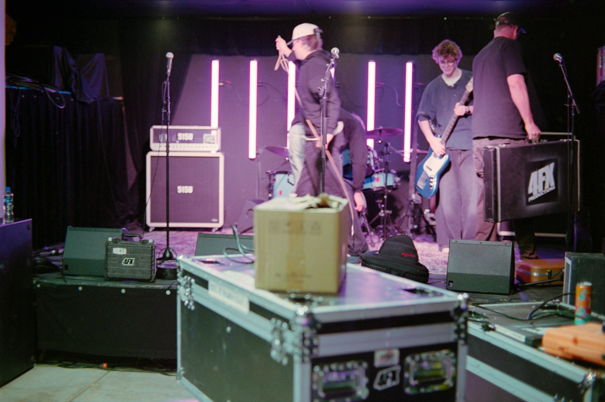
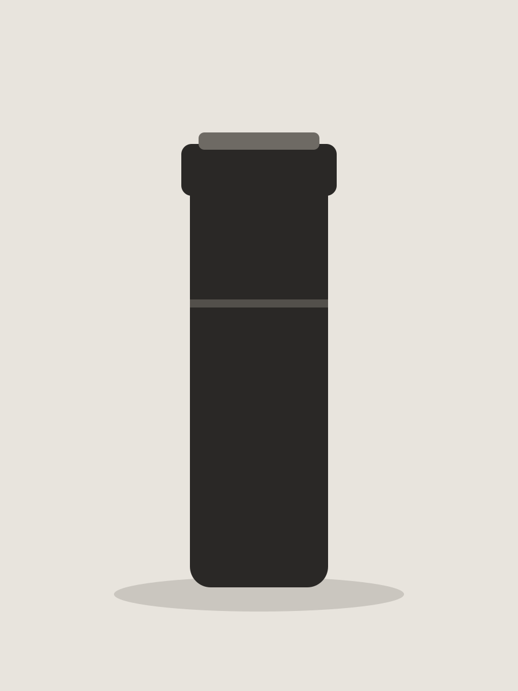
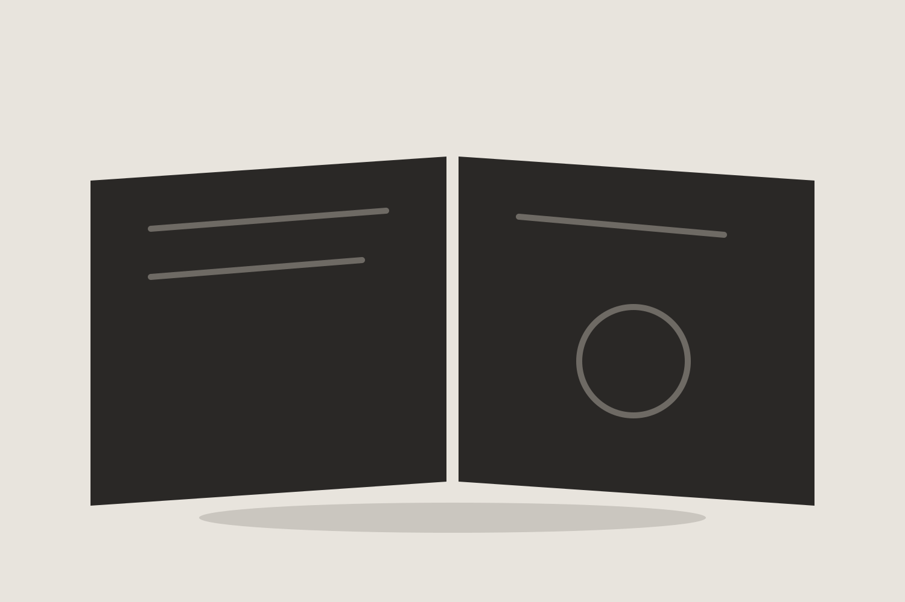
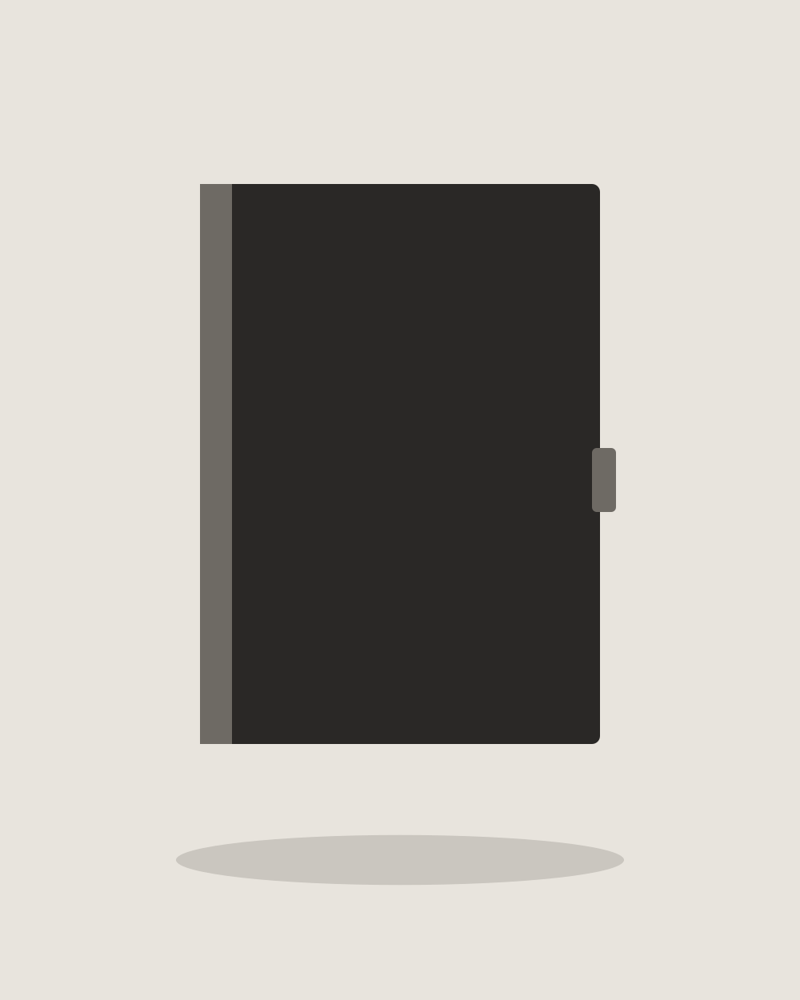
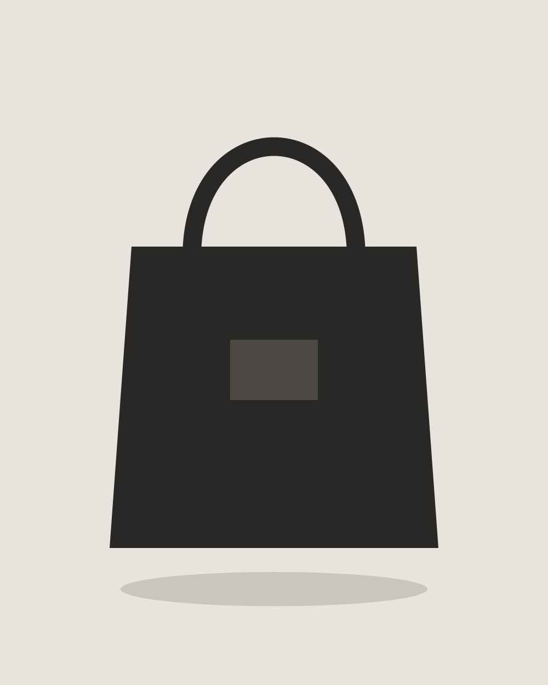

혼자 있는 장면을 오래 봅니다
4주부터 7주까지 고른 사진·사람·공간·물건을 한곳에 모았는데, 고를 때마다 사람이 적고 빛이 한쪽에서 들어오는 장면에 손이 갔습니다.
4주 기준 – 나는 비어 있는 쪽이 넓은 사진을 고른다.
5주 기준 – 결과보다 고치는 과정이 보이는 사람에게 끌린다.
6주 기준 – 빛이 한쪽에서만 들어오는 자리를 고른다.
7주 기준 – 손에 쥐는 감이 좋고, 오래 써도 질리지 않는 것만 남았다.

1장 시선
나는 비어 있는 쪽이 넓은 사진을 고른다.
하늘
건물 사이로 좁게 보이는 하늘만 골랐는데, 넓은 하늘보다 틈으로 보이는 하늘이 더 멀어 보였기 때문이다.


손
무언가를 쥐고 있는 손보다 쉬고 있는 손이 좋아서, 고르고 나니 손가락이 펴진 사진만 남았다.


길
사람이 한 명도 없는 길을 골랐는데, 끝이 화면 밖으로 나가는 길일수록 오래 보게 된다.


2장 사람 · 윤서하
나는 이 사람의 무대보다, 무대 뒤에서 같은 부분을 열 번 고치는 태도가 좋다.
곡을 직접 쓰고 편곡까지 하는 싱어송라이터로,
공연마다 편곡을 조금씩 바꿔 무대에 올립니다.

같은 부분을 열 번 고친다
리허설 영상에서 첫 소절에 들어가는 타이밍을 열 번 넘게 다시 맞춘다.
완성은 한 번에 오지 않는다는 걸 아는 사람 같다.
소리를 직접 만진다
공연 전에 믹싱 콘솔 앞에 직접 앉아 소리를 조정한다.
결과물의 마지막 1%까지 자기 손으로 책임진다.
가져올 한 가지
과제를 내기 전에 한 부분을 골라 세 번 다시 고쳐 본다.
3장 공간
학교 3층 창가 자리
오후 세 시쯤 빛이 책상 절반까지만 들어온다.
밝은 쪽과 어두운 쪽이 한 책상에 같이 있어서 오래 앉아 있게 된다.
동네 빨래방
기계 소리 말고는 아무도 말하지 않는다.
기다리는 동안 할 일이 없어서 오히려 생각이 정리된다.

버스 맨 뒷자리
창이 두 면이라 풍경이 양쪽으로 흐른다.
움직이는데 가만히 있을 수 있는 자리라 좋다.
4장 물건
손에 쥐는 감이 좋고, 오래 써도 질리지 않는 것만 남았다.

스테인리스 텀블러
아침 수업 전에 커피를 담아 하루 종일 들고 다닌다.
손에 쥐었을 때 차갑지 않고 무게가 딱 한 손에 맞는 데다, 뚜껑을 한 번에 돌려 열 수 있어서 수업 중에도 소리가 안 난다.
0.5mm 샤프
스케치 첫 선을 그을 때만 쓴다.
선이 가늘어서 틀려도 덮어 그리기 쉽고, 쥐는 부분이 고무라 오래 그려도 손가락이 덜 아프다.



무지 노트
수업 메모와 아이디어 스케치를 한 권에 섞어 쓴다.
줄이 없어서 글과 그림의 자리를 내가 정할 수 있고, 종이가 두꺼워 펜이 뒷장에 배지 않는다.

유선 이어폰
작업할 때 같은 플레이리스트를 반복해서 듣는다.
충전할 필요가 없어서 잊어버릴 일이 없고, 줄을 감아 두는 버릇 덕분에 가방 속에서 바로 찾는다.
캔버스 토트백
노트북과 노트를 넣고 매일 들고 나간다.
바닥이 넓어서 노트북이 눕혀 들어가고, 오래 써서 부드러워진 천의 감촉이 좋다.

기준 (가설)
나는 비어 있는 쪽이 넓은 화면을 고른다.
근거: 1장 하늘·길, 3장 창가 자리
취향 축: 밀도 — 빈 쪽
나는 한쪽에서만 들어오는 빛을 좋아한다.
근거: 3장 창가, 1장 손
취향 축: 빛·색 — 한쪽 빛
나는 결과보다 과정이 보이는 것에 끌린다.
근거: 2장 사람, 4장 물건(오래 써서 부드러워진 가방)
취향 축: 거리감 — 가까이